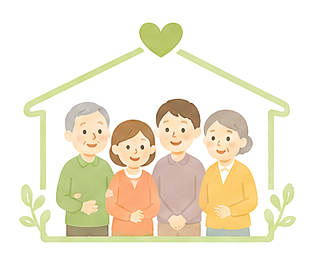
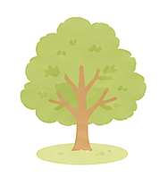
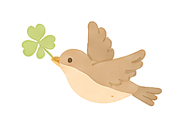

今月の勉強会
今後の予定
次回以降の勉強会の予定です。
活動報告・お知らせ
イベントの様子や、船堀会からのお知らせをお届けします。

船堀会とは
平成26年の立ち上げから10周年を迎えました。介護・福祉・医療の現場で働く私たちが、職種を越えて出会い、語り合い、学び合う場所——それが船堀会です。毎月第3木曜日に勉強会と懇親会を開催しています。


お問い合わせ
勉強会の参加・入会のご相談など、お気軽にどうぞ。
地域でつなぐ介護・医療の連携
介護・医療に関わる個人、法人、NPO諸団体他どなたでもご参加いただけます。地域に関わる情報発信交換の場として、また事業者間の連携の場として、研修参加者全員で活用できることを願っております。
次回以降の勉強会の予定です。
イベントの様子や、船堀会からのお知らせをお届けします。

平成26年の立ち上げから10周年を迎えました。介護・福祉・医療の現場で働く私たちが、職種を越えて出会い、語り合い、学び合う場所——それが船堀会です。毎月第3木曜日に勉強会と懇親会を開催しています。


勉強会の参加・入会のご相談など、お気軽にどうぞ。